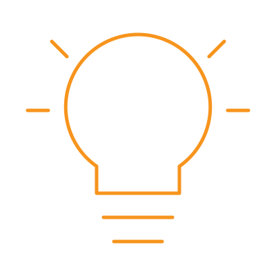
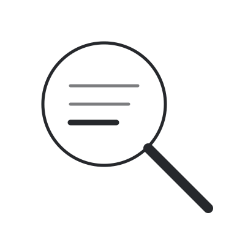
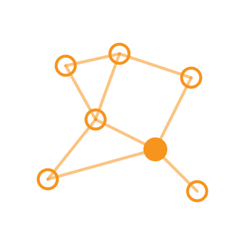

סטודיו למחקר · מפגש 4
מה עובד, מה לא, ומה מותר
פרופ' נמרוד טלמון · 6.1.2027 / 13.1.2027
תואר שני · הנדסת תעשייה וניהול · אוניברסיטת בן-גוריון בנגב · תשפ"ז

“I propose to consider the question, ‘Can machines think?’”
Turing, 1950
75 שנה אחרי, השאלה כבר קצת אחרת 🙂
סבב
מה אני עושה
נכתב ומתוחזק על ידי AI
כל חברי המעבדה מנווטים אותו, דרך כפתור אחד
מה אני עושה
סוכנים שכותבים מאמר, כל שעה עוד צעד, בלי מגע יד אדם
ואני? קובע את הכללים, ובודק מה יצא
וגם
אתר שנכתב עם AI, ואני רק אומר מה לשנות
יודעים מה AI יכול היום, ופועלים בהתאם
מצפים ל-AGI, ופועלים בהתאם
מצפים ל-ASI, ופועלים בהתאם
לפחות הגלולה הראשונה
Mowshowitz, The Three AI Pills, 2026 · Koutecký, 2026
The Bitter Lesson
“general methods that leverage computation are ultimately the most effective, and by a large margin”
Sutton, 2019
קליפ שנעשה כולו עם AI, מפרומפט אחד · Mollick, The Dot and the Swarm, 2026
שאלה
מומחיות: לשפוט מהר ונכון
לדעת אילו רעיונות מבחוץ רלוונטיים
מה לשמור, ומה לזרוק
לנסות לבד, לא לחכות שיגידו לכם
Mollick, The Overhang, 2026
בוחרים בעיות
ומוותרים על אחרות, גם יפות
בודקים הכל
את עצמכם, ואת הסוכנים
קוראים כמו שופט
מה התוצאה באמת נותנת?
AI כמו מנחה
אתם שואלים, מכוונים, ואחראים
ידע טכני עדיין חשוב: אי אפשר לשפוט מה שלא מבינים
מתוך ה-Mantras של BGULAB
חיפוש וסיכום
סימולציות, ניסויים
ניתוח וגרפים
טיוטה וליטוש
ניסוח ובדיקה
בודקים כל אחד, במקור
זה לא אותו דבר כמו נכון
בלי הבנה
AI רגיש
לאיך שאתם מתקשרים איתו, וזה דורש ידע עמוק ורחב
הסכנה
להרגיש שהבנתם, בלי להבין
המבחן
להסביר את זה, או לפתור את הבא, בלי AI
Koutecký, 2026
אף פעם לא ברשימת המחברים
על מה שהוא כתב או יצר
על כל מילה, שלכם
ובתזה: מדברים על זה עם המנחה
למשל: ACM Publications Policy
תרגיל
משפרים, ואז שופטים: מה השתפר? מה התקלקל?

ולסיום
AI 2027: תרחיש עם שני סופים
“Call your representative if you are American, and pray if you are not” (Koutecký)
Kokotajlo, Alexander, Larsen, Lifland & Dean, 2025
לבדוק מה AI יכול היום
ללמוד לעומק משתלם, בכל תרחיש
להשתמש ב-AI בכוונה, ולא לתת לו לזייף הבנה
בהשראת (ובאישור 🙂) Martin Koutecký, "A few words about AI", 2026
סטודיו למחקר · מפגש 4
שאלות?
פרופ' נמרוד טלמון · 6.1.2027 / 13.1.2027
תואר שני · הנדסת תעשייה וניהול · אוניברסיטת בן-גוריון בנגב · תשפ"ז
